① 保持弹塑性(能和矿硐及围岩裂隙保持协调变形)；
② 微膨胀不收缩(达到长期封堵预期效果)；
③ 耐酸、碱、盐(抗腐蚀能力强、抗剪切强度高)；
④ 固化/稳定化重金属（可用于S/S）。
KEP技术包括两部分，即KEP材料制备技术+KEP静压注浆技术。鉴于KEP材料具有持续的弹塑性物理性能(Keep Elastic Plastic)，故简称为KEP技术。
KEP材料+精准勘查+静压注浆+全程监测
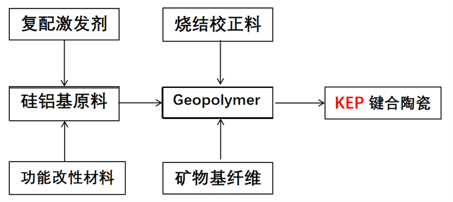
KEP静压注浆技术（点击播放）
14#矿硐硐口坐标X:3614085.753,Y: 409579.926,Z:521.00,硐口坡高15.04m,矿硐硐口底宽2.55m,顶宽2.25m,左壁高1.66m,右壁高1.68m,顶中高1.85m。矿硐封堵期间未见集中涌水点，矿硐口渗出“磺水”基本雨季水量增大，出现涌水，涌水量0.16L/S,见图1，矿硐长度220m,矿硐注浆量1489.5m,施工日期2022年6月20日，竣工日期2022年7月18日。
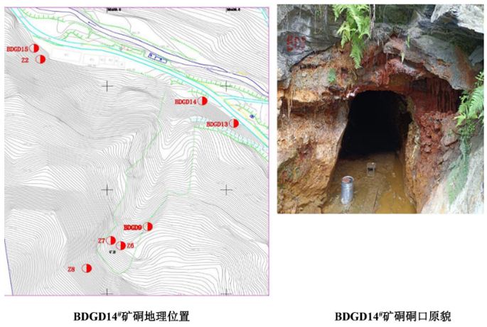
图1 BDGD14#矿硐地理位置及硐口原貌
BDGD14#矿硐展布不规则，平面呈“十”字形态(通过硐内物探所得矿硐形态见图2)。矿硐掘进总长度220.0m,硐口掘进方向为南西210°。其中主矿硐长145.00m,宽1.15～2.24m,硐高0.98～2.54m; 右支硐长7.00m,宽2.00～3.00m,硐高1.80m,走向北西280°;左支硐长25.00m,宽2.00m,硐高3.00m;矿房的行人通道长约43.00m, 宽约2.00m,高1.50～4.50m;矿房长约43.00m,宽约20m,硐高约13.00m,堆砌有遗弃的大量矿渣，矿渣堆高10.00～13.00m。主矿硐掘进至103m处，开拓右支硐，掘进方向为北西280°;主矿硐掘进至125m处，开拓左支硐，掘进方向为南东100°;主矿硐掘进至126m处，开拓矿房；主矿硐126～131m段，硐顶见木支撑，已失稳(图3)。主矿硐最窄处仅容1人通过，硐底见车辙印，矿硐中空气阴凉潮湿，伴有硫磺气味和氨气味。
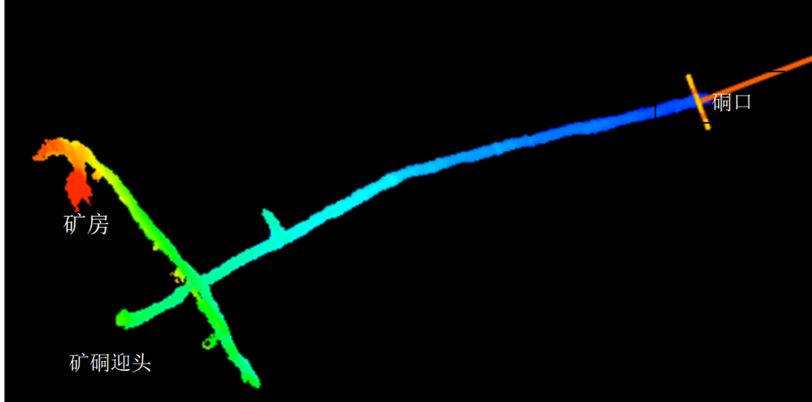
图2 BDGD14号 矿硐物探成像
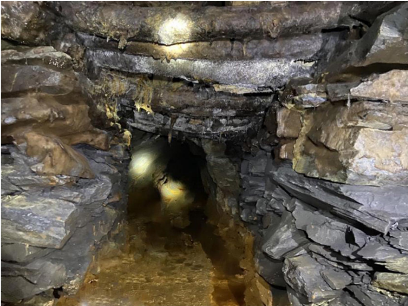
图3 126-131m段木支撑（已失稳）
BDGD14#矿硐内岩石主要为含炭绢云母石英片岩、炭质片岩及石英片岩，岩层产状140°～232°∠61°～77°,风化面呈黄褐色、灰黄色，新鲜面呈灰黑色、银灰色，变晶结构，片理构造，片理面可见鳞片状排列的绢云母，节理裂隙发育，节理裂隙面铁质、泥质、硫化物浸染严重，见方解石脉及石英脉，厚1～3mm,片理经历不同构造运动变形改造，发生了强烈的揉皱变形。
硐室岩体发育2组优势裂隙，走向0°～10°、270°～310°,缓倾角0°～30°占比25%, 中倾角30～60°占比34%,陡倾角60～90°占比41%。部分裂隙贯穿整个矿硐三壁(图4),裂隙宽度1～22mm,铁质、泥质、硫化物充填，裂隙形态主要为波状、不规则状，部分裂隙有磺水渗出。
硐内构造发育，主矿硐87m处发育破碎带，破碎带宽0.4～0.8m, 产状37°∠86°,破碎带内岩石破碎，母岩成分为绢云母石英片岩，碎岩块呈次棱角状，直径4～34cm,沿着破碎带有少量的磺水渗出，见图5。
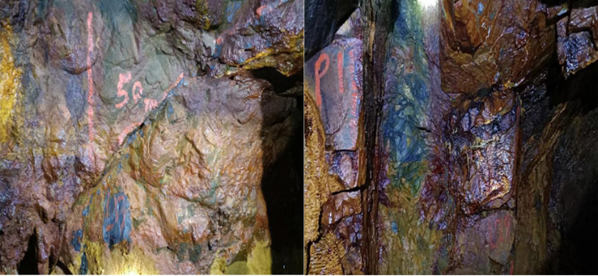
图4、5 贯穿裂隙和破碎带
矿硐封堵打开后，发现硐内大量积水，水深约25cm,底泥厚度50cm,勘查期间经人工抽排并清理完成。
主矿硐9.0～119.5m范围内硐顶和两壁湿润，部分地段出现出水，通过对矿硐出水点统计，矿硐出水点共有11处，全部分布于主矿硐内，W1位于主矿硐17.3m,沿硐顶裂隙滴水；W2位于主矿硐61.7m, 沿硐顶裂隙滴水；W3位于主矿硐63.3m,沿硐顶裂隙涌水；W4位于主矿硐64.2m,沿硐顶裂隙涌水；W5位于主矿硐64.6m,沿硐顶裂隙涌水；W6位于主矿硐72.6m,沿左壁裂隙渗水；W7位于主矿硐78.6m,沿左壁裂隙渗水；W8位于主矿硐80.1m,沿左壁裂隙渗水；w9位于主矿硐87.2m,沿左壁裂隙涌水；W10位于主矿硐89.4m, 沿左壁裂隙涌水；W11位于主矿硐112.6m,沿左壁裂隙涌水。
矿硐充水水源为构造裂隙水和大气降水，主要通过节理裂隙及层间裂隙进入采空矿硐。
渗水区的两壁底部堆积大量泥质沉淀物，相对于矿硐雨季涌水量，早季仅硐内有积水，硐口无明显涌水。主矿硐9.0～55.0m渗水段伴有白色、黄色絮状硫化物析出，于硐顶形成白色、黄色、黄褐色石帘，长短不一。主矿硐77.0～82.0m渗水段伴有黄色、黄褐色絮状硫化物析出，于硐壁形成黄色、黄褐色石帘。主矿硐112.6～119.5m渗水段伴有褐色、黄褐色絮状硫化物析出，形成褐色、黄褐色沉淀物，见图6。
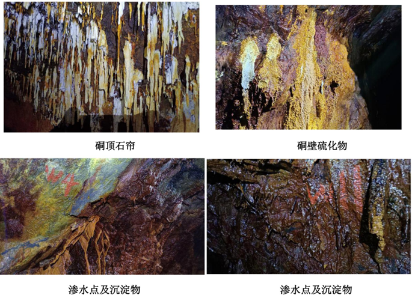
图6 矿硐出水原貌
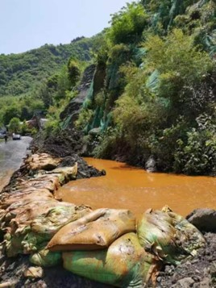
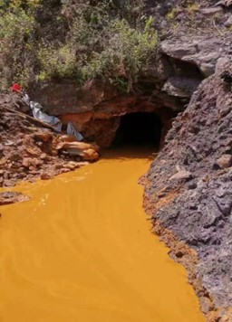
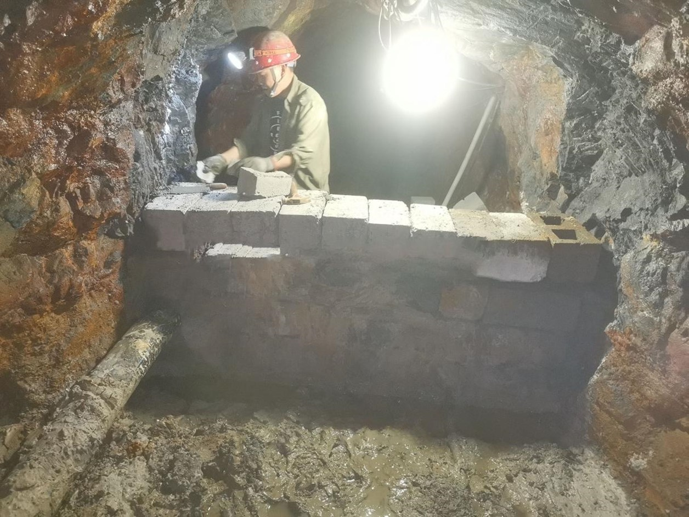
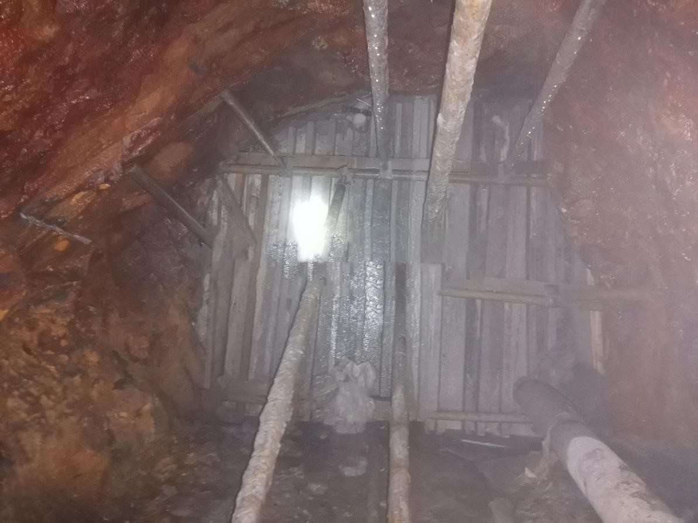
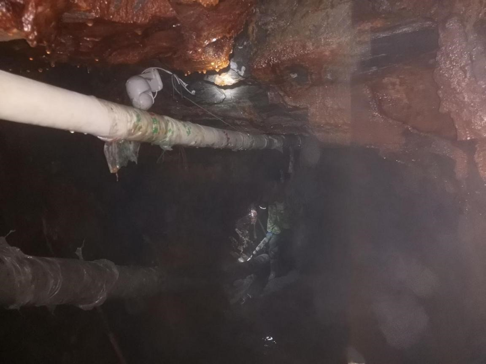
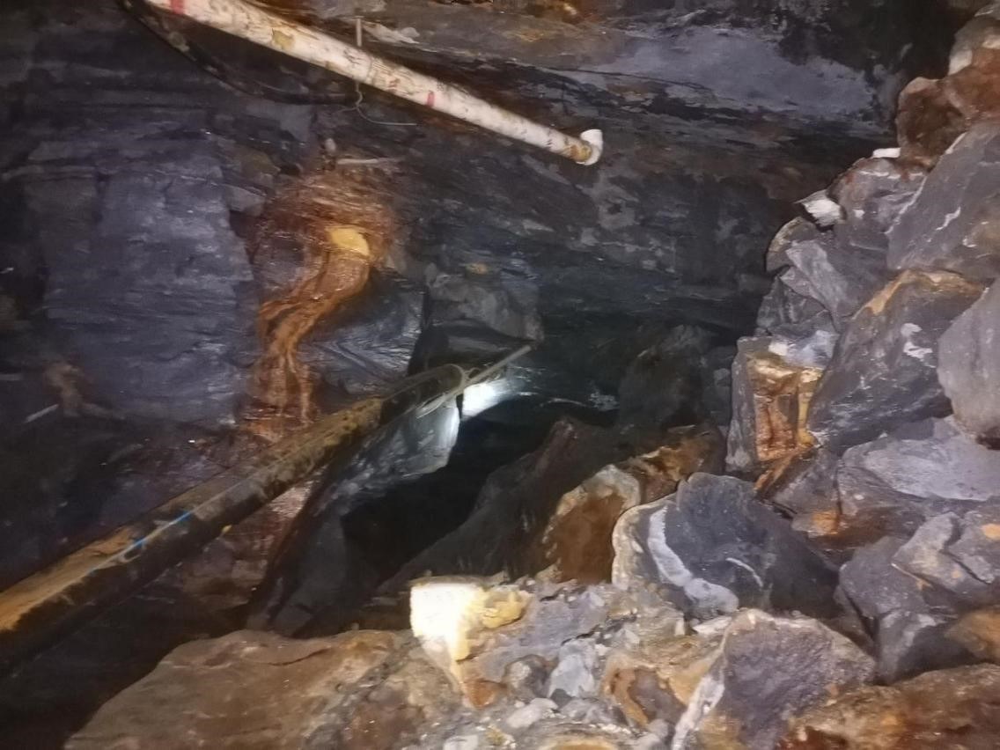
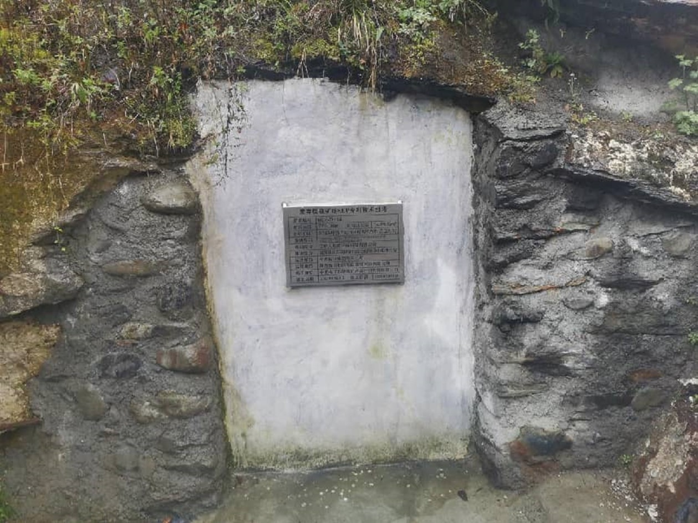